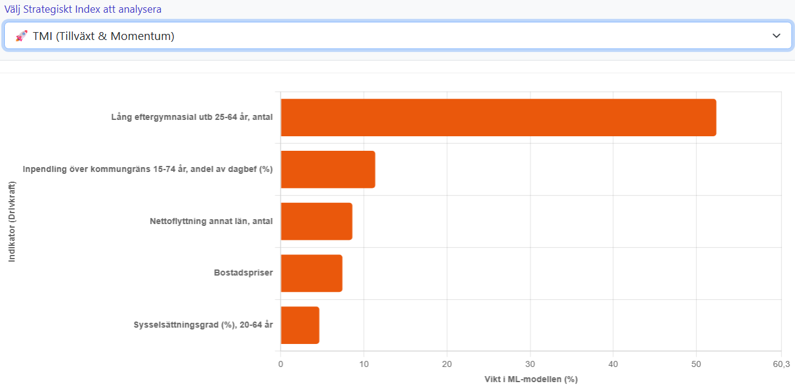

Detta verktyg är designat för att ge beslutsfattare, analytiker och strateger en djupgående och visuell förståelse för hur Sveriges största kommuner och regioner presterar, positionerar sig och utvecklas. Genom att kombinera tunga statistiska indikatorer kan vi snabbt identifiera mönster, styrkor och sårbarheter som annars döljs i stora datamängder.
När man analyserar kommuner av vitt skild storlek vinner normalt sett den med störst befolkning om man bara räknar absoluta tal (volym). För att dashboarden ska mäta genuin strukturell muskelkraft använder systemet en matematisk harmonisering för alla sammansatta index:
Plattformen innehåller förkalkylerade index som slår ihop enskilda indikatorer till breda strategiska mått.
Dessa fyra index är skarpt avgränsade för att mäta specifika och oberoende egenskaper hos kommunen.
Hur bra är platsen på att locka till sig och behålla människor, kapital och familjer?
| Indikator | Vikt | Riktning | Motiv |
|---|---|---|---|
| Nettoflyttning annat län (30-59 år) | 0.40 | Hög | Visar hur många i den mest skattekraftiga åldern som aktivt väljer kommunen framför alternativ nationellt. |
| Bostadspriser | 0.30 | Hög | Marknadens yttersta kvitto på betalningsvilja för att få bo på platsen. |
| Födda barn per 100 000 vuxna | 0.20 | Hög | En indikator på social vitalitet, framtidstro och trygghet för familjebildning. |
| Inflyttningsandel eget län av inrikes inflyttning | 0.10 | Låg | Mäter stadens nationella dragningskraft. Ett lägre värde indikerar att staden framgångsrikt attraherar kompetens från övriga Sverige och internationellt, snarare än att enbart tömma det egna närområdet på invånare. |
Hur stark, dynamisk och produktiv är den lokala ekonomin idag?
| Indikator | Vikt | Riktning | Motiv |
|---|---|---|---|
| Skattekraft | 0.35 | Hög | Det mest precisa måttet på vad den ekonomiska motorn faktiskt genererar för kommunens välfärd. |
| Nettopendling | 0.25 | Hög | Visar att det lokala näringslivet är starkare än vad den lokala arbetskraften räcker till. |
| Total BRP | 0.20 | Hög | Den totala lokala produktionen och värdeskapandet. |
| Nettoinkomst 20-64 år, median | 0.15 | Hög | Disponibel köpkraft och faktisk rikedom som stannar i invånarnas plånböcker. |
| Förvärvsinkomst 20-64 år, median | 0.05 | Hög | Värdeskapande direkt härrörande från lönearbete. |
Vilken kunskapsnivå finns, och hur väl omsätts den på arbetsmarknaden?
| Indikator | Vikt | Riktning | Motiv |
|---|---|---|---|
| Lång eftergymn. utb 25-64 år (%) | 0.40 | Hög | Grundmåttet på avancerad kompetens. Åldersspannet (25-64 år) filtrerar bort oetablerade studentpopulationer. |
| KIBS (andel av sysselsatta) | 0.30 | Hög | Visar hur stor andel av den lokala arbetsmarknaden som utgörs av kunskapsintensiva tjänster. |
| Sysselsättningsgrad 20-64 år (%) | 0.20 | Hög | Visar att humankapitalet faktiskt aktiveras och befinner sig i arbete. |
| Långtidsarbetslöshet | 0.10 | Låg | Bestraffar strukturellt utanförskap (skalan inverteras vid indexberäkningen). |
Mäter hastigheten i stadens utveckling. Hur mycket framtid skapas idag, oberoende av historisk storlek?
| Indikator | Vikt | Riktning | Motiv |
|---|---|---|---|
| Befolkningsförändring per år (%) | 0.35 | Hög | Den demografiska tillväxttakten – grundmåttet på att kommunen växer. |
| Sysselsättning 15-74 år (förändring per år, %) | 0.35 | Hög | Den ekonomiska tillväxttakten – garanterar att jobben växer i takt med befolkningen (kvalitativ expansion). |
| Bostadsbyggande per 1000 inv. | 0.20 | Hög | Visar på lokal framtidstro och fysisk kapacitet att möta efterfrågan. |
| Nyföretagande per 1000 inv. | 0.10 | Hög | Det lokala entreprenörskapet och näringslivets förnyelsetakt (morgondagens ekonomi). |
📌 Det är dessa fyra förinställda standardindex som redovisas i Indexkalkylatorn: Konkurrenskraft. De har en annan logik än de fyra som nämns ovan och begränsas inte fullt ut av ortogonalitet.
Dashboarden är uppdelad i tio analytiska vyer som var och en fyller en specifik funktion. Här följer en genomgång av hur du tolkar dem.
Fyrfältaren hjälper dig att positionera och kategorisera geografiska områden baserat på två valfria dimensioner (X- och Y-axel). Bubblans storlek visar en tredje dimension (t.ex. Folkmängd eller BRP). Genom att studera matrisen kan du placera aktörer i fyra strategiska fack:
I Fyrfältaren kan du växla mellan tre helt olika perspektiv beroende på vad du vill bevisa:
Denna flik används för att hitta och bevisa statistiska samband mellan olika indikatorer bland de 12 största kommunerna. Korrelerar högt nyföretagande med stark befolkningstillväxt? Här får du fram R²-värden (förklaringsgrad), korrelationskoefficienter och ekvationer. Systemet letar dessutom automatiskt fram vilka underliggande indikatorer som bäst driver resultatet på Y-axeln genom multipel regression.
Den här fliken drivs av maskininlärning och svarar på frågan: Vilka kommuner är egentligen våra sanna strukturella tvillingar?
Modellen placerar ofta Linköping i klustret "Kunskapsmotorerna" tillsammans med Uppsala och Lund, snarare än med grannarna Norrköping och Jönköping. Detta innebär att Linköping bör blicka mot andra stora universitetsstäder när man letar efter "best practice" för att lösa strukturella utmaningar.
I denna nya 360-gradersvy får vi äntligen se vilka specifika krafter som drar städerna åt olika håll. Unsupervised Random Forest och PCA placerar städerna utifrån hur lika deras ekonomiska "DNA" är.
I den runda kompassen ser vi tydligt att Linköping (den stora röda bubblan) dras hårdast av de magneter som representerar en "Stark Inkomstbas (Medelklass)" och positionen som ett "Regionalt Nav". Detta bevisar maskinens förståelse för att Linköpings strukturella "DNA" i ECI inte bygger på extrem befolkningsvolym, utan på en högteknologisk och välbetald medelklass som fungerar som magnet för hela regionens inpendling. Linköping sitter i en otroligt stabil strategisk "ficka" i väst!
Den här fliken går från att beskriva vad som händer, till att förklara varför det händer. Vilka specifika, underliggande faktorer bygger egentligen konkurrenskraft?

I stället för att försöka förbättra alla 40+ mätetal samtidigt, ger denna analys en knivskarp prioriteringslista. Om Linköping exempelvis vill höja sin poäng i ECI, och modellen pekar ut KIBS och nattbefolkningens storlek som de tyngsta orsakerna, är det exakt där framtida politiska satsningar ger högst "Return on Investment".
Algoritmen (Random Forest):
Här används en Random Forest Regressor som bygger hundratals digitala "beslutsträd". Träden tävlar om att förutse indexpoängen och algoritmen summerar sedan vilka indikatorer som fällde de avgörande besluten (Feature Importance).
Två matematiska skyddsvallar är inbyggda mot dataläckage (Target Leakage):
Vad visar fliken?
Simulatorn använder dynamisk multipel regression (maskininlärning) för att förutspå hur Linköpings attraktivitet skulle förändras om vi justerade strategiska nyckeltal. Modellen tränas i realtid på data från Sveriges största städer och räknar om matematiken baserat på hur många "spakar" du väljer att aktivera.
Hur använder jag den?
Välj ett målområde (t.ex. Ekonomisk Motor) och hur många drivkrafter du vill simulera. Använd plus/minus-knapparna för att justera Linköpings värden. Simulatorn hanterar automatiskt enhetskonverteringar i bakgrunden för att garantera rättvisa jämförelser med jättar som Stockholm.
Analytiskt värde för Linköping:
Kvantifierar strategiska beslut. Visar svart på vitt vilken specifik insats (t.ex. bostadsbyggande vs. utbildningsnivå) som ger störst matematisk utväxling för stadens långsiktiga konkurrenskraft.
Vad visar fliken?
En tidslinje som visualiserar Linköpings utveckling över tid jämfört med övriga 11 storstäder, Östergötlands län och riksgenomsnittet för utvalda nyckelindikatorer.
Hur använder jag den?
Använd rullistorna för att växla mellan indikatorer. Diagrammet uppdateras direkt och ger en tydlig bild av trendbrott och konjunkturcykler.
Analytiskt värde för Linköping:
Sätter dagens nyckeltal i ett historiskt perspektiv. Visar om Linköping drar ifrån, tappar mark, eller följer den generella nationella trenden i jämförelse med andra jämnstora tillväxtmotorer.
Vad visar fliken?
Analysen bygger på Spatial Ekonometri och Tyngdkraftsmodellen. Den mäter den ekonomiska dragningskraften mellan Linköping och andra orter genom att ställa den ekonomiska massan (Total BRP) i relation till restiden i kvadrat. Eftersom tiden kvadreras synliggörs hur extremt viktigt avståndet är för lokal arbetsmarknadsförstoring.
Analytiskt värde för Linköping:
Bevisar matematiskt varför korta restider till kranskommunerna och Norrköping är avgörande. Linköping är det dominanta navet i regionen, vilket innebär att staden suger åt sig kompetens från omlandet men också strålar ut tillväxt tillbaka.
Att Stockholm toppar tyngdkraftsindexet framför den lokala integrationen visar kraften i extrem ekonomisk bruttovolym (agglomerationsekonomi). För Linköping skapar detta specifika effekter:
Vad visar fliken?
Denna vy innehåller en kortfattad, auto-genererad strategisk textanalys (Executive Summary) av Linköpings konkurrenskraft. Den binder samman insikterna från ECI, PCI, HCI och TMI till läsbar text, och ger direkta rekommendationer för strategisk positionering utifrån det nuvarande dataläget i Ligan 5–12.
Vad visar fliken?
Här flyttas hela analysen ut på kartan. Verktyget låter dig spatialt visualisera index och indikatorer för att hitta kluster, regionala spridningseffekter eller geografiska klyftor. Kartan är det ultimata komplementet när man vill förklara var tillväxten och attraktiviteten faktiskt sker rent fysiskt i landskapet.